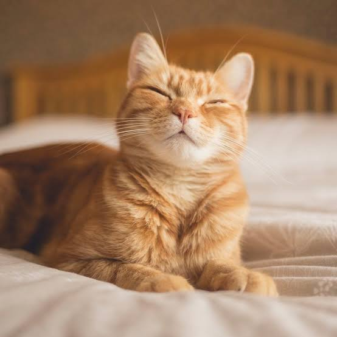

Mačka
Mačka (Felis silvestris forma catus)

Opis
Mačka je mali, mesožderni sisavac i jedan od najpopularnijih kućnih ljubimaca na svijetu.
Glavne osobine:
• Anatomija: Ima gipko tijelo, oštre kandže koje može uvući, izvrsne reflekse te prilagođen vid za lov u mraku.
• Ponašanje: Poznata je po svojoj neovisnosti, čistoći (provodi puno vremena čisteći krzno) i izraženom lovačkom instinktu.
• Komunikacija: Glasa se mijaukanjem, predenjem (koje obično označava zadovoljstvo) i siktanjem kada je u opasnosti.